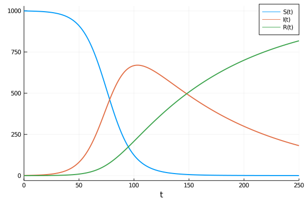

Catalyst.jl for Reaction Models
Catalyst.jl is a domain specific language (DSL) for high performance simulation and modeling of chemical reaction networks. Catalyst utilizes ModelingToolkitReactionSystems, leveraging ModelingToolkit to enable large-scale simulations through auto-vectorization and parallelism. ReactionSystemss can be used to generate ModelingToolkit-based models, allowing the easy simulation and parameter estimation of mass action ODE models, Chemical Langevin SDE models, stochastic chemical kinetics jump process models, and more. Generated models can be used with solvers throughout the broader SciML ecosystem, including higher level SciML packages (e.g. for sensitivity analysis, parameter estimation, machine learning applications, etc).
Features
- DSL provides a simple and readable format for manually specifying chemical reactions.
- The Catalyst.jl API provides functionality for extending networks, building networks programmatically, and for composing multiple networks together.
ReactionSystems generated by the DSL can be converted to a variety ofModelingToolkit.AbstractSystems, including ODE, SDE and jump process representations.- By leveraging ModelingToolkit, users have a variety of options for generating optimized system representations to use in solvers. These include construction of dense or sparse Jacobians, multithreading or parallelization of generated derivative functions, automatic classification of reactions into optimized jump types for Gillespie type simulations, automatic construction of dependency graphs for jump systems, and more.
- Generated systems can be solved using any DifferentialEquations.jl ODE/SDE/jump solver, and can be used within
EnsembleProblems for carrying out GPU-parallelized parameter sweeps and statistical sampling. Plot recipes are available for visualizing the solutions. - Julia
Exprs can be obtained for all rate laws and functions determining the deterministic and stochastic terms within resulting ODE, SDE or jump models. Latexifycan be used to generate LaTeX expressions corresponding to generated mathematical models or the underlying set of reactions.
Installation
Catalyst can be installed through the Julia package manager:
]add Catalyst
using CatalystIllustrative Example
Here is a simple example of generating and solving an SIR ODE model. We first define the SIR reaction model using Catalyst
using Catalyst
rn = @reaction_network begin
α, S + I --> 2I
β, I --> R
end α βTo generate and solve a mass action ODE version of the model we use
using DiffEqBase, OrdinaryDiffEq
p = [.1/1000, .01] # [α,β]
tspan = (0.0,250.0)
u0 = [999.0,1.0,0.0] # [S,I,R] at t=0
op = ODEProblem(rn, u0, tspan, p)
sol = solve(op, Tsit5()) # use Tsit5 ODE solverwhich we can plot as
using Plots
plot(sol, lw=2)